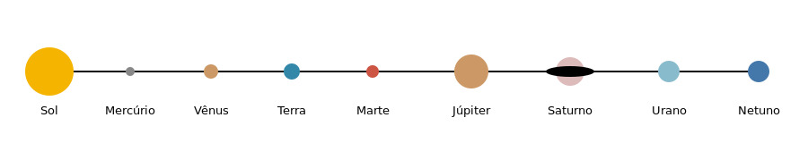

Diâmetros aproximados publicados pela NASA, em quilômetros.
| Valores em quilômetros | ||
|---|---|---|
| Planeta | Diâmetro | Em relação com a Terra |
| Terra | 12.756km | 1,00x |
| Marte | 6.792km | 0,53x |
| Júpiter | 142.984km | 11,21x |

O que mostram os números?
Júpiter tem mais de 11x o diâmetro da Terra. Marte tem cerca da metade.